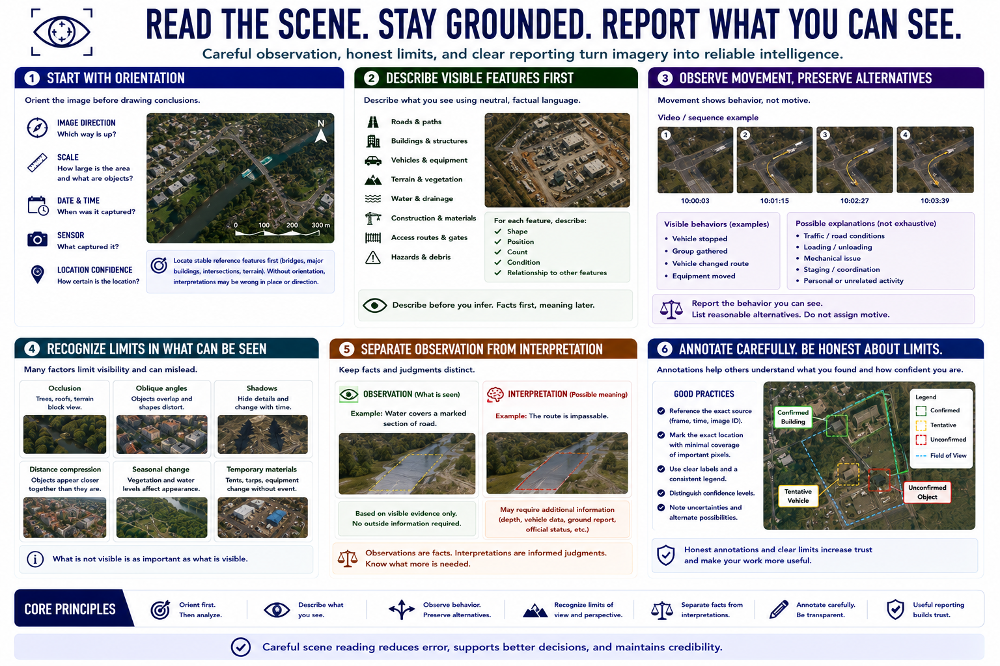

Reading the Scene from Above
Connecting to LMS... Progress: in progress

Narration
Scene reading begins with orientation. Identify image direction, scale, date, time, sensor, and location confidence. Locate stable reference features before examining change or movement. Without orientation, a plausible interpretation may belong to the wrong place or direction.
Visible features may include roads, paths, buildings, vehicles, terrain, vegetation, water, construction, access routes, and hazards. Describe shape, position, count, condition, and relationship using neutral language before assigning meaning.
Movement patterns can be observed in video or repeated frames, but they rarely establish motive. A stopped vehicle, gathered people, or changed route may have many explanations. Report the visible behavior and preserve alternatives.
Shadows, roofs, trees, terrain, and perspective can hide features. Distance can compress space, while oblique angles can make objects overlap. Seasonal vegetation and temporary materials can change appearance without indicating a meaningful event.
Separate observation from interpretation. An observation might be that water covers a marked section of road. An interpretation may be that the route is impassable. The second judgment may require depth, vehicle, ground, or official information not visible in the image.
Use annotations and evidence references carefully. Mark the exact source frame and location, avoid covering important pixels, and distinguish confirmed features from tentative identifications. Honest limits make the observation more useful.